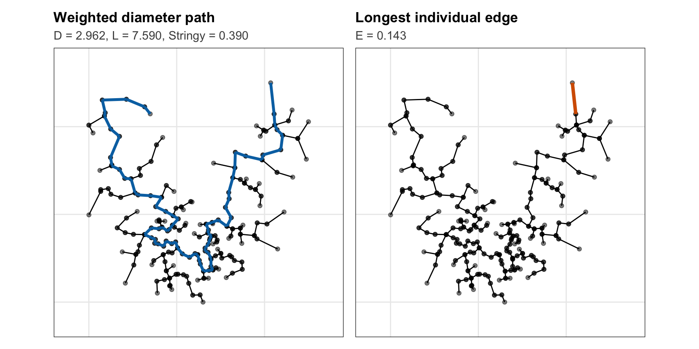
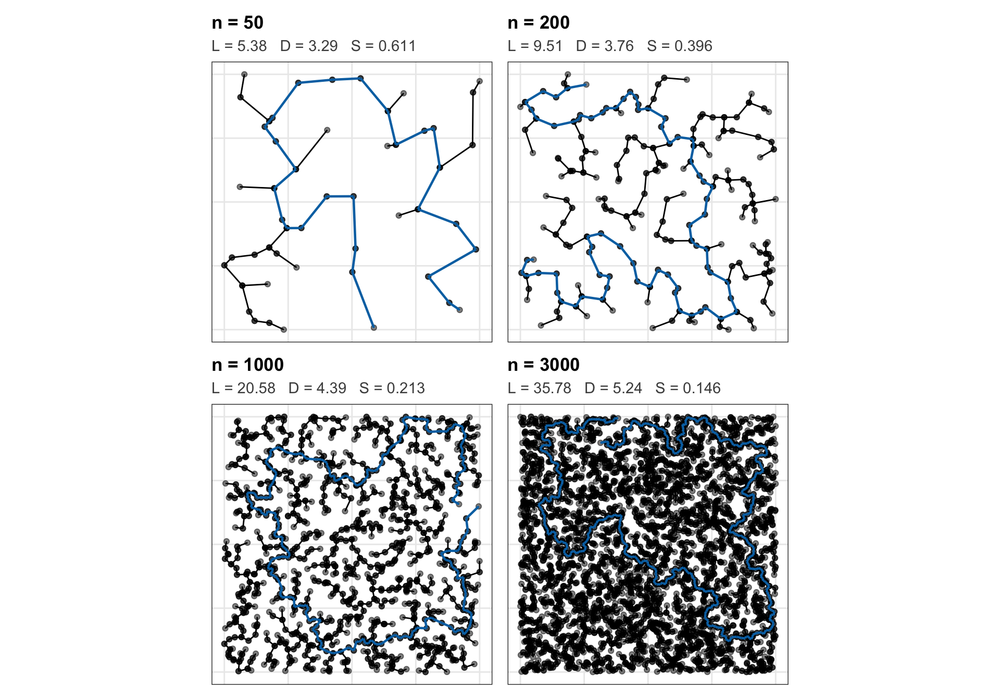

The Scaling Behaviour of an MST-Based Stringy Scagnostic
Understanding Sample-Size Dependence Through MST Geometry and Null Calibration
Keywords
scagnostics, projection pursuit, minimum spanning tree, scaling behaviour, weighted diameter, null calibration, geometric statistics, high-dimensional visualization
1 Abstract
Scagnostics summarize geometric features of bivariate point clouds using graph-based quantities developed from Tukey’s scatterplot-diagnostic ideas (Tukey and Tukey 1985; Wilkinson et al. 2005; Wilkinson and Wills 2008). They are attractive candidates for projection pursuit because projection pursuit searches for informative low-dimensional views by optimizing an index over projections (Friedman and Tukey 1974; Huber 1985; Friedman 1987; Cook et al. 1995). However, a projection-pursuit index should respond primarily to structure rather than to sample size alone; comparable scales and distributions were explicitly identified as desirable properties for scagnostic measures by Wilkinson and Wills (2008). This paper investigates the finite-sample scaling behaviour of the MST-based stringy05 scagnostic,
\[ S_n=\frac{D_n}{L_n}, \]
where \(L_n\) is the total Euclidean length of the minimum spanning tree (MST) and \(D_n\) is its weighted diameter. Although both quantities are computed from the same tree, they capture fundamentally different aspects of its geometry: \(L_n\) accumulates length across all MST edges, whereas \(D_n\) records only the accumulated Euclidean length of the longest path.
We use theoretical results for Euclidean MSTs together with simulation experiments to determine how these two components contribute to the sample-size dependence of Stringy. For bivariate uniform data, the denominator follows the theoretically established \(\sqrt n\) scaling of total Euclidean MST length (Steele 1988). The numerator is more difficult: no directly applicable theoretical growth rate is available for the weighted Euclidean MST diameter. Empirically, it is not well described by either the longest-edge scaling from Euclidean MST theory (Penrose 1997) or the \(n^{1/3}\) graph-diameter benchmark obtained for a different random-MST model (Addario-Berry et al. 2006). Among the candidate scaling functions examined, \(\log n\) provides the strongest stabilization of the mean weighted diameter over the larger simulated sample sizes, although this is an empirical finite-sample result rather than an asymptotic claim.
Using these separate scalings yields
\[ \widetilde S_n = S_n\frac{\sqrt n}{\log n}, \]
which substantially reduces the trend in the centre of the distribution but introduces two important limitations: it does not fully stabilize the distribution and it destroys the natural \([0,1]\) bound of the original scagnostic. We also show that weighted and hop-based versions of Stringy are not interchangeable; they can select different MST paths because they measure accumulated geometric length and edge count, respectively.
These findings suggest that deterministic scaling is most useful for explaining why Stringy changes with sample size, rather than for redefining the index itself. We therefore motivate a complementary statistical solution: retain the original bounded Stringy measure and calibrate it relative to its sample-size-specific null distribution. In particular, we examine models for the upper null quantiles and outline a bounded null-calibrated transformation for projection pursuit. This separates geometric understanding from statistical interpretation and provides a principled route toward using Stringy as a projection-pursuit index.
2 Introduction
Projection pursuit is built on a simple idea: if a high-dimensional dataset contains an informative low-dimensional view, an index should be able to recognize it. The method searches over projections and assigns high values to views displaying the type of structure of interest (Friedman and Tukey 1974; Huber 1985; Friedman 1987). Guided and grand tours later connected this optimization perspective with dynamic visualization, allowing analysts to move through the space of projections while using an index to direct attention toward potentially informative views (Cook et al. 1995; Wickham et al. 2011).
This seemingly simple task places strong demands on the index. A projection-pursuit index should respond to the structure present in a projection, but it should not change substantially because of features unrelated to that structure. Sample size is one such feature. If the same underlying distribution receives systematically different index values as the number of observations changes, then an optimizer may be responding partly to the finite-sample behaviour of the index rather than to the geometry of the data. For projection pursuit, this distinction is fundamental: an index is useful only if a high value can be interpreted as evidence of the target structure rather than as a consequence of how many points happen to be present.
Scagnostics are particularly appealing in this setting because they were designed to quantify visual characteristics of scatterplots. The idea has its roots in Tukey’s broader program of exploratory data analysis and graphical methods (Tukey 1975, 1977), and more specifically in Tukey and Tukey’s notion of scatterplot diagnostics (Tukey and Tukey 1985). The modern graph-theoretic formulation represents a bivariate point cloud using structures such as the minimum spanning tree (MST), convex hull, and alpha hull, and then constructs numerical measures of properties such as stringy, sparsity, clumpy, convexity, and outlying (Wilkinson et al. 2005, 2006; Wilkinson and Wills 2008).
Because scagnostics translate visual structure into numerical indices, they are natural candidates for high-dimensional exploration and projection pursuit. They have been used to guide searches through high-dimensional projections and evolving multivariate data (Wilkinson et al. 2006; Anand et al. 2012; Dang et al. 2013; Dang and Wilkinson 2014). Their statistical behaviour, however, matters just as much as their visual interpretation. Previous work has considered the distributions of scagnostic measures, the desirability of comparable scales, transformations intended to expose hidden structure, and sensitivity to preprocessing choices such as binning (Wilkinson and Wills 2008; Dang and Wilkinson 2014; Wang et al. 2020).
This paper focuses on one particular scagnostic, stringy05, whose definition is based entirely on the geometry of the MST. For a Euclidean MST \(T_n\) constructed from \(n\) bivariate observations, Stringy is defined as
\[ S_n=\frac{D_n}{L_n}, \]
where
\[ L_n=\sum_{e\in T_n}|e| \]
is the total Euclidean length of the tree and
\[ D_n=\max_{u,v\in T_n} d_{T_n}(u,v) \]
is the weighted graph diameter, namely the accumulated Euclidean length of the longest path through the MST.
The interpretation is intuitive. If the MST is almost one long unbranched path, most of the total tree length lies along its diameter, so \(D_n\) is close to \(L_n\) and \(S_n\) approaches one. If the tree branches extensively, no single path contains most of the total length and Stringy becomes smaller (Wilkinson et al. 2005; Wilkinson and Wills 2008).
The difficulty is hidden inside this apparently simple ratio. The numerator and denominator are not the same kind of random geometric object. The denominator is additive: it sums the lengths of all \(n-1\) MST edges. The numerator is extremal: it first identifies the longest weighted path in the tree and then sums only the edge lengths along that path. There is therefore no reason to expect the two quantities to scale identically with sample size.
This distinction becomes practically important because the null behaviour of Stringy changes with \(n\). In simulations of unstructured data, the upper tail of the Stringy distribution decreases as sample size increases. Consequently, the same observed Stringy value can represent very different levels of unusualness at different sample sizes. For projection pursuit, where an optimizer may evaluate thousands of candidate projections, such sample-size dependence can distort how the index distinguishes structure from background noise.
Understanding this behaviour requires separating the ratio into its geometric components. For total Euclidean MST length, classical results provide a clear scaling law. In two dimensions and under suitable regularity conditions,
\[ L_n \]
grows on the order of
\[ \sqrt n \] (Steele 1988). The weighted diameter is more difficult. Results exist for nearby quantities, such as the longest Euclidean MST edge (Penrose 1997) and the graph diameter of random MSTs under different probabilistic models (Addario-Berry et al. 2006), but these results do not directly give the growth rate of the weighted Euclidean MST diameter used in Stringy.
This theoretical gap motivates the main investigation of the paper. Rather than assuming a growth rate for the numerator, we compare several candidate scaling functions empirically and examine which best removes systematic sample-size trends. Importantly, we do not judge a normalization only by whether it flattens the mean. A useful correction should also be examined in terms of relative spread and upper-tail behaviour, because these determine whether the statistic is genuinely becoming comparable across sample sizes.
The analysis also reveals a second problem. A deterministic correction based on separately scaling the numerator and denominator can substantially reduce the sample-size trend, but it no longer preserves the original unit-interval property
\[ 0<S_n\leq1. \]
This raises a broader methodological question: should the geometry of Stringy itself be redefined in order to remove sample-size effects, or should the original geometric index instead be retained and calibrated statistically against its null distribution?
The paper addresses five questions:
- Does total Euclidean MST length behave as predicted by established Euclidean MST theory?
- Can the weighted Stringy diameter be explained by nearby theoretical quantities such as the longest edge or hop diameter?
- Which empirical scaling functions best stabilize the weighted diameter over the simulated range?
- Does a scaling function that stabilizes the mean also stabilize relative dispersion and the upper tail?
- Is sample-size-aware null calibration a more appropriate solution than replacing the original bounded definition of Stringy?
The paper is deliberately framed as an empirical scaling investigation rather than as a derivation of the asymptotic growth rate of the weighted Euclidean MST diameter. The contribution is instead to connect known MST theory with the finite-sample behaviour of Stringy, identify which component drives the sample-size dependence, evaluate the limits of deterministic scaling, and motivate a statistically calibrated version of the index for projection pursuit.
3 Geometry of the Stringy statistic
Stringy is defined by a remarkably simple ratio, but that simplicity hides a more interesting geometric story.
Minimum spanning trees have long been used to summarize spatial relationships among observations. Classical statistical connections include single-linkage clustering (Gower and Ross 1969) and later density-based cluster estimation using the sample MST (Stuetzle 2003). In scagnostics, however, the role of the MST is different: it acts as a geometric skeleton of the scatterplot, from which visual characteristics of the point cloud can be quantified (Wilkinson et al. 2005; Wilkinson and Wills 2008).
For Stringy, the key question is not simply how large the MST is. It is how much of that tree can be captured by one dominant path.
3.1 Anatomy of the index
The distinction among total tree length, weighted diameter, and longest individual edge is easiest to understand by looking directly at the tree.
Figure 1 shows the same structured point cloud and exactly the same MST, but highlights two different geometric objects. In the left panel, the emphasized path is the weighted diameter: the path through the MST whose accumulated Euclidean edge length is largest. This is the quantity used in the numerator of Stringy. In the right panel, only the single longest edge is highlighted.
The contrast is important. The longest edge is a local extreme: it identifies one unusually long connection in the tree. The weighted diameter is global: it can pass through many comparatively short edges and accumulate a much larger total length. Although both quantities come from the same MST, they answer fundamentally different geometric questions.
The original Stringy index compares the length of the longest weighted path with the total length of the tree,
\[ S_n=\frac{D_n}{L_n}. \]
Because every diameter path consists only of edges already contained in the MST,
\[ 0<D_n\leq L_n, \]
and therefore
\[ 0<S_n\leq1. \]
This bound is built directly into the geometry of the index. A value near one means that most of the tree can be traversed along a single dominant path; a smaller value indicates that more of the total tree length lies in branches away from that path.
This structural bound becomes especially important later. Any proposed normalization that modifies the numerator and denominator differently may reduce sample-size dependence, but it may also break the geometric relationship that guarantees Stringy remains between zero and one.
3.2 Same distribution, increasingly dense MSTs
The sample-size problem becomes more intuitive when the tree is allowed to grow.
Figure 2 shows four independent samples from exactly the same data-generating mechanism,
\[ (X,Y)\sim U(0,1)^2, \]
with only the sample size changing. The square itself does not expand, the underlying distribution does not change, and no new structure is introduced. What changes is the resolution at which the region is sampled.
As \(n\) increases, the MST fills the same spatial domain with more vertices and therefore more edges. Individual edges become shorter, but there are more of them. The total tree length, the weighted diameter, and their ratio do not respond to these changes in the same way.

Figure 2 shows why Stringy can change with sample size even when the underlying distribution does not change.
As \(n\) increases, the MST contains more edges. These edges are generally shorter because the points are packed more densely, but there are many more of them. As a result, the total MST length can still increase.
The weighted diameter behaves differently because it uses only the edges along one longest path through the tree. When more points are added, this path may pass through more vertices, but the individual edges along the path also become shorter.
So the numerator and denominator of Stringy respond to increasing sample size in different ways.
The key question is therefore not simply whether Stringy changes with \(n\), but why it changes. In particular, we want to know whether the total tree length \(L_n\) and the longest weighted path \(D_n\) grow at different rates.
The rest of this paper investigates this difference.
4 References
Addario-Berry, Louigi, Nicolas Broutin, and Bruce Reed. 2006. “The Diameter of the Minimum Spanning Tree of a Complete Graph.” Discrete Mathematics & Theoretical Computer Science Proceedings AG: 237–48. https://doi.org/10.46298/dmtcs.3513.
Anand, Anushka, Leland Wilkinson, and Tuan Nhon Dang. 2012. “Visual Pattern Discovery Using Random Projections.” 2012 IEEE Conference on Visual Analytics Science and Technology (VAST), 43–52. https://doi.org/10.1109/VAST.2012.6400490.
Cook, Dianne, Andreas Buja, Javier Cabrera, and Catherine Hurley. 1995. “Grand Tour and Projection Pursuit.” Journal of Computational and Graphical Statistics 4 (3): 155–72. https://doi.org/10.1080/10618600.1995.10474674.
Dang, Tuan Nhon, Anushka Anand, and Leland Wilkinson. 2013. “TimeSeer: Scagnostics for High-Dimensional Time Series.” IEEE Transactions on Visualization and Computer Graphics 19 (3): 470–83. https://doi.org/10.1109/TVCG.2012.128.
Dang, Tuan Nhon, and Leland Wilkinson. 2014. “Transforming Scagnostics to Reveal Hidden Features.” IEEE Transactions on Visualization and Computer Graphics 20 (12): 1624–32. https://doi.org/10.1109/TVCG.2014.2346572.
Friedman, Jerome H. 1987. “Exploratory Projection Pursuit.” Journal of the American Statistical Association 82 (397): 249–66. https://doi.org/10.1080/01621459.1987.10478427.
Friedman, Jerome H., and John W. Tukey. 1974. “A Projection Pursuit Algorithm for Exploratory Data Analysis.” IEEE Transactions on Computers C-23 (9): 881–90. https://doi.org/10.1109/T-C.1974.224051.
Gower, J. C., and G. J. S. Ross. 1969. “Minimum Spanning Trees and Single Linkage Cluster Analysis.” Journal of the Royal Statistical Society: Series C (Applied Statistics) 18 (1): 54–64. https://doi.org/10.2307/2346439.
Huber, Peter J. 1985. “Projection Pursuit.” The Annals of Statistics 13 (2): 435–75. https://doi.org/10.1214/aos/1176349519.
Penrose, Mathew D. 1997. “The Longest Edge of the Random Minimal Spanning Tree.” The Annals of Applied Probability 7 (2): 340–61. https://doi.org/10.1214/aoap/1034625335.
Steele, J. Michael. 1988. “Growth Rates of Euclidean Minimal Spanning Trees with Power Weighted Edges.” The Annals of Probability 16 (4): 1767–87. https://doi.org/10.1214/aop/1176991596.
Stuetzle, Werner. 2003. “Estimating the Cluster Tree of a Density by Analyzing the Minimal Spanning Tree of a Sample.” Journal of Classification 20 (1): 25–47. https://doi.org/10.1007/s00357-003-0004-6.
Tukey, John W. 1975. “Mathematics and the Picturing of Data.” Proceedings of the International Congress of Mathematicians (Vancouver, BC, 1974), Volume 2 (Montreal, Canada), 523–31.
Tukey, John W. 1977. Exploratory Data Analysis. Addison-Wesley.
Tukey, John W., and Paul A. Tukey. 1985. “Computer Graphics and Exploratory Data Analysis: An Introduction.” Proceedings of the Sixth Annual Conference and Exposition: Computer Graphics ’85, Volume III, Technical Sessions (Fairfax, VA), 773–85.
Wang, Yunhai, Zeyu Wang, Tingting Liu, et al. 2020. “Improving the Robustness of Scagnostics.” IEEE Transactions on Visualization and Computer Graphics 26 (1): 759–69. https://doi.org/10.1109/TVCG.2019.2934796.
Wickham, Hadley, Dianne Cook, Heike Hofmann, and Andreas Buja. 2011. “Tourr: An r Package for Exploring Multivariate Data with Projections.” Journal of Statistical Software 40 (2): 1–18. https://doi.org/10.18637/jss.v040.i02.
Wilkinson, Leland, Anushka Anand, and Robert Grossman. 2005. “Graph-Theoretic Scagnostics.” IEEE Symposium on Information Visualization, 2005. INFOVIS 2005, 157–64. https://doi.org/10.1109/INFVIS.2005.1532142.
Wilkinson, Leland, Anushka Anand, and Robert L. Grossman. 2006. “High-Dimensional Visual Analytics: Interactive Exploration Guided by Pairwise Views of Point Distributions.” IEEE Transactions on Visualization and Computer Graphics 12 (6): 1363–72. https://doi.org/10.1109/TVCG.2006.94.
Wilkinson, Leland, and Graham Wills. 2008. “Scagnostics Distributions.” Journal of Computational and Graphical Statistics 17 (2): 473–91. https://doi.org/10.1198/106186008X320465.